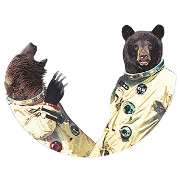
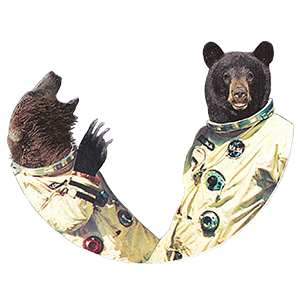
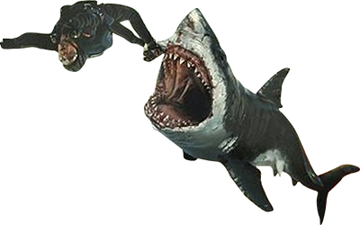
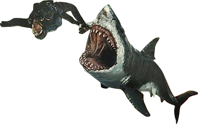

The
Life and Death
of
Tommy Chaos
and
Stacey Danger
Life and Death
of
Tommy Chaos
and
Stacey Danger
 

Think Blue Valentine meets Jurassic Park.
Dinosaurs have invaded Earth but neither Tommy nor Stacey care anymore, now that they’ve met each other. They escape the war, but whether they dive to the bottom of the ocean or fly to Outer Space, conflict always seems to find a way into their lives.
 
